The first stirrings of popular or pop music—any genre of music that appeals to a wide audience or subculture—began in the late 19th century, with discoveries by Thomas Edison and Emile Berliner. In 1877, Edison discovered that sound could be reproduced using a strip of tinfoil wrapped around a rotating metal cylinder. Edison’s phonographA 19th-century sound reproduction machine that originally recorded onto a tinfoil sheet wrapped around a cylinder. provided ideas and inspiration for Berliner’s gramophoneThe U.S. brand name for the phonograph; the gramophone used a disc instead of a cylinder., which used flat discs to record sound. The flat discs were cheaper and easier to produce than were the cylinders they replaced, enabling the mass production of sound recordings. This would have a huge impact on the popular music industry, enabling members of the middle class to purchase technology that was previously available only to an elite few. Berliner founded the Berliner Gramophone Company to manufacture his discs, and he encouraged popular operatic singers such as Enrico Caruso and Dame Nellie Melba to record their music using his system. Opera singers were the stars of the 19th century, and their music generated most of the sheet music sales in the United States. Although the gramophone was an exciting new development, it would take 20 years for disc recordings to rival sheet music in commercial importance.John Shepherd, Continuum Encyclopedia of Popular Music of the World (New York: Continuum, 2003), 483.
In the late 19th century, the lax copyright laws that existed in the United States at the beginning of the century were strengthened, providing an opportunity for composers, singers, and publishers to work together to earn money by producing as much music as possible. Numerous publishers began to emerge in an area of New York that became known as Tin Pan AlleyA term used to refer to the area in Manhattan in which singer-songwriter and publisher teams worked in the early 20th century.. Allegedly named because the cacophony of many pianos being played in the publishers’ demo rooms sounded like people pounding on tin pans, Tin Pan Alley soon became a prolific source of popular music, with its publishers mass-producing sheet music to satisfy the demands of a growing middle class. Whereas classical artists were exalted for their individuality and expected to differ stylistically from other classical artists, popular artists were praised for conforming to the tastes of their intended audience. Popular genres expanded from opera to include vaudevilleA popular form of variety entertainment in the early 20th century that included singing acts, magicians, comedians, and acrobats.—a form of variety entertainment containing short acts featuring singers, dancers, magicians, and comedians that opened new doors for publishers to sell songs popularized by the live shows—and ragtimeA jazzy style of piano music characterized by a syncopated melody that was influenced by offbeat dance music and music., a style of piano music characterized by a syncopated melody.
Figure 6.2
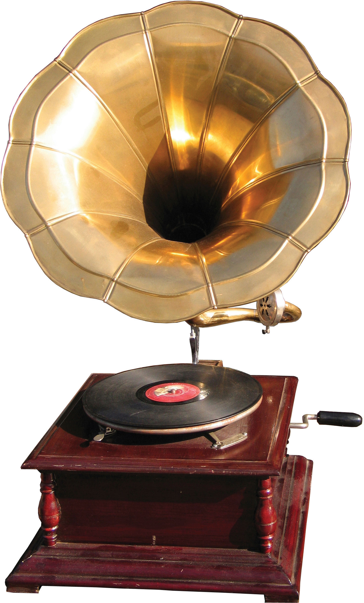For most of the 20th century, gramophone records were the primary medium used for commercial music reproduction.
The Tin Pan Alley tradition of song publishing continued throughout the first half of the 20th century with the show tunes and soothing ballads of Irving Berlin, Cole Porter, and George Gershwin, and songwriting teams of the early 1950s, such as Jerry Leiber and Mike Stoller. By hiring songwriters to compose music based on public demand and mainstream tastes, the Tin Pan Alley publishers introduced the concept of popular music as we know it.
In the 1920s, Tin Pan Alley’s dominance of the popular music industry was threatened by two technological developments: the advent of electrical recording and the rapid growth of radio.
During the early days of its development, the gramophone was viewed as a scientific novelty that posed little threat to sheet music because of its poor sound quality. However, as inventors improved various aspects of the device, the sales of gramophone records began to affect sheet music sales. The Copyright Act of 1911 had imposed a royalty on all records of copyrighted musical works to compensate for the loss in revenue to composers and authors. This loss became even more prominent during the mid-1920s, when improvements in electrical recording drastically increased sales of gramophones and gramophone records. The greater range and sensitivity of the electrical broadcasting microphone revolutionized gramophone recording to such an extent that sheet music sales plummeted. From the very beginning, the record industry faced challenges from new technology.
Composers and publishers could deal with the losses caused by an increase in gramophone sales because of the provisions made in the Copyright Act. However, when radio broadcasting emerged in the early 1920s, both gramophone sales and sheet-music sales began to suffer. Radio was an affordable medium that enabled listeners to experience events as they took place. Better yet, it offered a wide range of free music that required none of the musical skills, expensive instruments, or sheet music necessary for creating one’s own music in the home, nor the expense of purchasing records to play on the gramophone. This development was a threat to the entire recording industry, which began to campaign for, and was ultimately granted, the right to collect license fees from broadcasters. With the license fees in place, the recording industry eventually began to profit from the new technology.
Figure 6.3
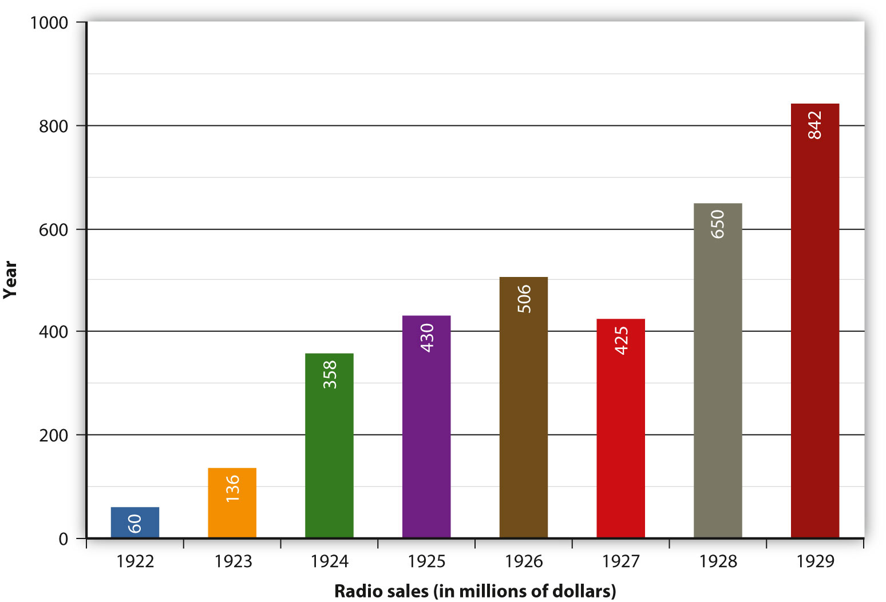Radio sales dramatically increased throughout the 1920s because radios were an affordable way to listen to free music and live events.
The ascendance of Tin Pan Alley coincided with the emergence of jazzAn improvisational style of music that emerged in New Orleans in the 1930s, characterized by syncopation and heavily accented rhythms. in New Orleans. An improvisational form of music that was primarily instrumental, jazz incorporated a variety of styles, including African rhythms, gospel, and blues. Established by New Orleans musicians such as King Oliver and his protégé, Louis Armstrong, who is considered by many to be one of the greatest jazz soloists in history, jazz spread along the Mississippi River by the bands that traveled up and down the river playing on steamboats. During the Prohibition era in the 1920s and early 1930s, some jazz bands played in illegal speakeasies, which helped generate the genre’s reputation for being immoral and for threatening the country’s cultural values. However, jazz became a legitimate form of entertainment during the 1930s, when white orchestras began to incorporate jazz style into their music. During this time, jazz music began to take on a big band style, combining elements of ragtime, black spirituals, blues, and European music. Key figures in developing the big jazz band included bandleaders Duke Ellington, Coleman Hawkins, and Glenn Miller. These big band orchestras used an arranger to limit improvisation by assigning parts of a piece of music to various band members. Although improvisation was allowed during solo performances, the format became more structured, resulting in the swing style of jazz that became popular in the 1930s. As the decade progressed, social attitudes toward racial segregation relaxed and big bands became more racially integrated.
At the heart of jazz, the bluesA 12-bar musical form with a call-and-response format between the singer and his guitar that originated in the Mississippi Delta at the turn of the 20th century. was a creation of former black slaves who adapted their African musical heritage to the American environment. Dealing with themes of personal adversity, overcoming hard luck, and other emotional turmoil, the blues is a 12-bar musical form with a call-and-response format between the singer and his guitar. Originating in the Mississippi Delta, just upriver from New Orleans, blues music was exemplified in the work of W. C. Handy, Ma Rainey, Robert Johnson, and Lead Belly, among others. Unlike jazz, the blues did not spread significantly to the Northern states until the late 1930s and 1940s. Once Southern migrants introduced the blues to urban Northern cities, the music developed into distinctive regional styles, ranging from the jazz-oriented Kansas City blues to the swing-based West Coast blues. Chicago blues musicians such as Muddy Waters were the first to electrify the blues through the use of electric guitars and to blend urban style with classic Southern blues. The electric guitar, first produced by Adolph Rickenbacker in 1931, changed music by intensifying the sound and creating a louder volume that could cut through noise in bars and nightclubs.“Early Years: The Earliest Days of the Electric Guitar,” Rickenbacker International Corporation, June 22, 2010, http://www.rickenbacker.com/history_early.asp; Mary Bellis, “The History of Guitar and Electric Guitar,” About.com Guide, http://inventors.about.com/od/gstartinventions/a/guitar_2.htm. By focusing less on shouting, singers could focus on conveying more emotion and intimacy in their performances. This electrified form of blues provided the foundations of rock and roll.
Figure 6.4
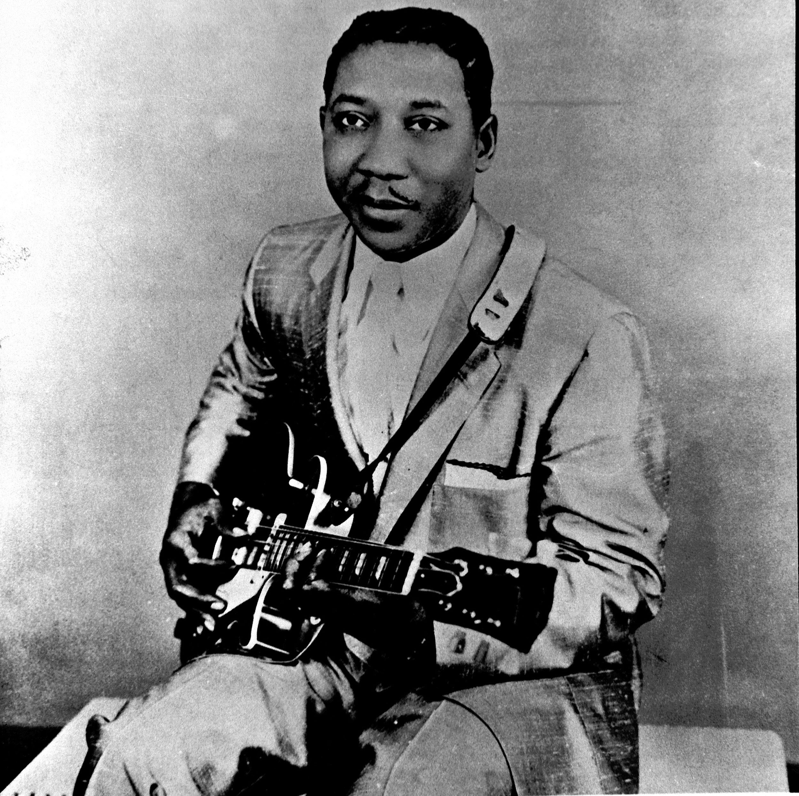The Chicago blues, characterized by the use of electric guitar and harmonica, provided the foundations of rock and roll. Muddy Waters was one of the most famous Chicago blues musicians.
The 1920s through the 1950s is considered the golden age of radio. During this time, the number of licensed radio stations in the United States exploded from 5 in 1921 to over 600 by 1925.Ed Salamon, Pittsburgh’s Golden Age of Radio (Chicago: Arcadia, 2010), 8. The introduction of radio broadcasting provided a valuable link between urban city centers and small, rural towns. Able to transmit music nationwide, rural radio stations broadcast local music genres that soon gained popularity across the country.
Technological advances during the 1940s made it even easier for people to listen to their favorite music and for artists to record it. The introduction of the reel-to-reel tape recorder paved the way for several innovations that would transform the music industry. The first commercially available tape recorders were monophonic, meaning that they only had one track on which to record sound onto magnetic tape. This may seem limiting today, but at the time it allowed for exciting innovations. During the 1940s and 1950s, some musicians—most notably guitarist Les Paul, with his song “Lover (When You’re Near Me)”—began to experiment with overdubbing, in which they played back a previously recorded tape through a mixer, blended it with a live performance, and recorded the composite signal onto a second tape recorder. By the time four-track and eight-track recorders became readily available in the 1960s, musicians no longer had to play together in the same room; they could record each of their individual parts and combine them into a finished recording.
Figure 6.5
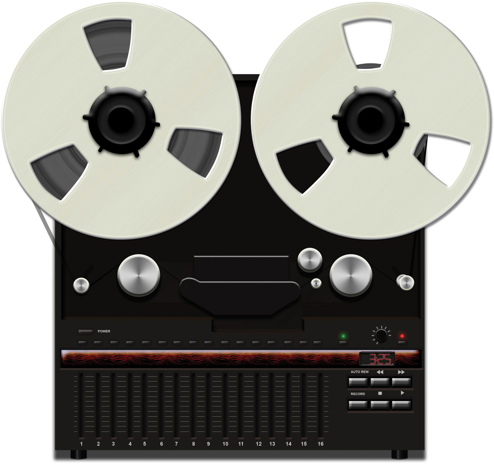Reel-to-reel tape recorders and magnetic tape not only helped artists experiment with overdubbing, but they also were a compact method for reproducing and preserving audio.
While the reel-to-reel recorders were in the early stages of development, families listened to records on their gramophones. The 78 revolutions per minute (rpm) disc had been the accepted recording medium for many years despite the necessity of changing the disc every 5 minutes. In 1948, Columbia Records perfected the 12-inch 33 rpm long-playing (LP) disc, which could play up to 25 minutes per side and had a lower level of surface noise than the earlier (and highly breakable) shellac discs.Alan Lomax, Alan Lomax: Selected Writings 1934–1997, ed. Ronald D. Cohen (New York: Routledge, 2003), 102. The 33 rpm discs became the standard form for full albums and would dominate the recorded music industry until the advent of the compact disc (CD).
During the 1940s, a mutually beneficial alliance between sound recording and radio existed. Artists such as Frank Sinatra and Ella Fitzgerald profited from radio exposure. Until this time, music had primarily been recorded for adults, but the popularity of Sinatra and his contemporaries revealed an entirely untapped market: teenagers. The postwar boom of the 1930s and early 1940s provided many teenagers spending money for records. Radio airplay helped to promote and sell records and the recording artists themselves, which in turn stabilized the recording industry. The near riots caused by the appearance of New Jersey crooner Frank Sinatra in concert paved the way for mass hysteria among Elvis Presley and Beatles fans during the rock and roll era.
New technology continued to develop in the 1950s with the introduction of television. The new medium spread rapidly, primarily because of cheaper mass-production costs and war-related improvements in technology. In 1948, only 1 percent of America’s households owned a television; by 1953 this figure had risen to nearly 50 percent, and by 1978 nearly every home in the United States owned a television.Tom Genova, “Number of TV Households in America,” Television History – The First 75 Years, http://www.tvhistory.tv/Annual_TV_Households_50-78.JPG. The introduction of television into people’s homes threatened the existence of the radio industry. The radio industry adapted by focusing on music, joining forces with the recording industry to survive. In an effort to do so, it became somewhat of a promotional tool. Stations became more dependent on recorded music to fill airtime, and in 1955 the Top 40 format was born. Playlists for radio stations were based on popularity (usually the Billboard Top 40 singles chart), and a popular song might be played as many as 30 or 40 times a day. Radio stations began to influence record sales, which resulted in increased competition for spots on the playlist. This ultimately resulted in payolaThe illegal practice of receiving money from record companies for playing particular songs on the radio.—the illegal practice of receiving payment from a record company for broadcasting a particular song on the radio. The payola scandal came to a head in the 1960s, when Cleveland, Ohio, DJ Alan Freed and 8 other disc jockeys were accused of taking money for airplay. Following Freed’s trial, an antipayola statute was passed, making payola a misdemeanor crime.
Technology wasn’t the only revolution that took place during the 1950s. The urban Chicago blues typified by artists such as Muddy Waters, Howlin’ Wolf, and B. B. King surged in popularity among white and black teenagers alike. Marketed under the name rhythm and bluesA combination of blues and jazz that was a precursor to rock and roll., or R&B, the sexually suggestive lyrics in songs such as “Sexy Ways” and “Sixty Minute Man” and the electrified guitar and wailing harmonica sounds appealed to young listeners. At the time, R&B records were classified as “race music” and their sales were segregated from the white music records tracked on the pop charts.David Szatmary, Rockin’ in Time: A Social History of Rock and Roll (Upper Saddle River, NJ: Prentice Hall, 2010), 16. Nonetheless, there was a considerable amount of crossover among audiences. In 1952, the Dolphin’s of Hollywood record store in Los Angeles, which specialized in R&B music, noted that 40 percent of its sales were to white individuals.David Szatmary, Rockin’ in Time: A Social History of Rock and Roll (Upper Saddle River, NJ: Prentice Hall, 2010), 16.
Although banned from some stations, others embraced the popular new music. In 1951, Freed started a late-night R&B show called The Moondog Rock & Roll House Party and began referring to the music he played as rock and rollA blend of rhythm and blues, country and western, folk, and gospel music that developed in the 1950s..“Alan Freed” History-of-rock.com, http://www.history-of-rock.com/freed.htm. Taking its name from a blues slang term for sex, the music obtained instant notoriety, gaining widespread support among teenage music fans and widespread dislike among the older generation.“Alan Freed” History-of-rock.com, http://www.history-of-rock.com/freed.htm. Frenetic showmen Little Richard and Chuck Berry were early pioneers of rock and roll, and their wild stage performances became characteristic of the genre. As the integration of white and black individuals progressed in the 1950s with the repeal of segregation laws and the initiation of the civil rights movement, aspects of black cultures, including music, became more widely accepted by many white individuals. However, it was the introduction of a white man who sang songs written by black musicians that helped rock and roll really spread across state and racial lines. Elvis Presley, a singer and guitarist, the “King of Rock and Roll,” further helped make music written by black individuals acceptable to mainstream white audiences and also helped popularize rockabilly—a blend of rock and country music—with black audiences during the mid-1950s. Heavily influenced by his rural Southern roots, Presley combined the R&B music of bluesmen B. B. King, John Lee Hooker, and Howlin’ Wolf with the country-western tradition of Roy Acuff, Ernest Tubb, and Jimmie Rodgers, and added a touch of gospel.“Biography,” Elvis Presley: Official Site of the King of Rock ’n’ Roll, http://www.elvis.com/about-the-king/biography_.aspx. The reaction Presley inspired among hordes of adolescent girls—screaming, crying, rioting—solidified his reputation as the first true rock and roll icon.
Figure 6.6
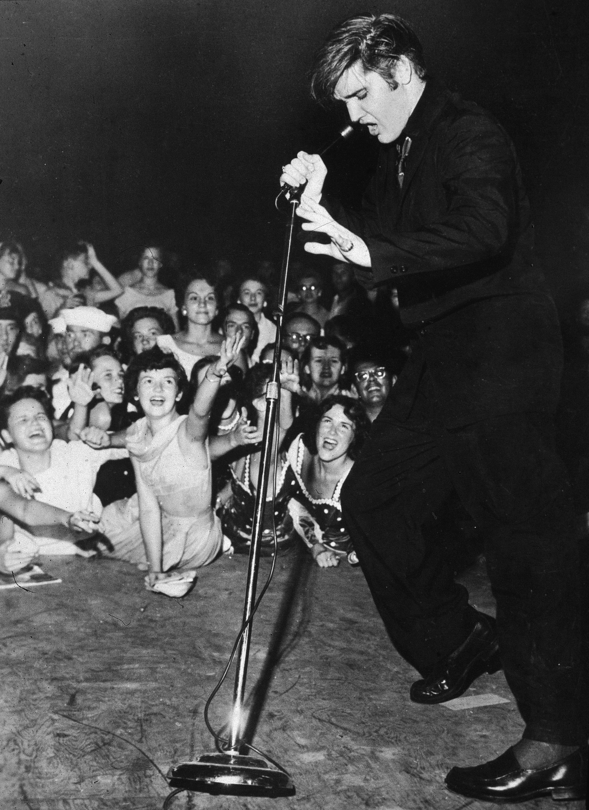Elvis Presley brought the style of R&B bluesmen to mainstream audiences in the 1950s.
Prior to 1964, rock and roll was primarily an American export. Although U.S. artists frequently reached the top of the charts overseas, few European artists achieved success on this side of the Atlantic. This situation changed almost overnight, with the arrival of British pop phenomenon the Beatles. Combining elements of skiffle—a type of music played on rudimentary instruments, such as banjos, guitars, or homemade instruments—doo-wop, and soul, the four mop-haired musicians from Liverpool, England, created a genre of music known as MerseybeatTerm used to describe the music of bands originating in the Mersey area of England during the 1960s, e.g. the Beatles., named after the River Mersey. The Beatles’ genial personalities and catchy pop tunes made them an instant success in the United States, and their popularity was heightened by several appearances on The Ed Sullivan Show. When the Beatles arrived in New York in 1964, they were met by hundreds of reporters and police officers and thousands of fans. Their appearance on The Ed Sullivan Show a few days later was the largest audience for an American television program, with approximately one in three Americans (74 million) tuning in.Jonathan Gould, Can’t Buy Me Love: The Beatles, Britain, and America (New York: Harmony Books, 2007), 3–4. Beatlemania—the term coined to describe fans’ wildly enthusiastic reaction to the band—extended to other British bands, and by the mid-1960s, the Kinks, the Zombies, the Animals, Herman’s Hermits, and the Rolling Stones were all making appearances on the U.S. charts. The Rolling Stones’s urban rock sound steered away from pop music and remained more true to the bluesy, R&B roots of rock and roll. During their first appearance on The Ed Sullivan Show, the Stones were lewd and vulgar, prompting host Ed Sullivan to denounce their behavior (although he privately acknowledged that the band had received the most enthusiastic applause he had ever seen).“The Rolling Stones,” The Official Ed Sullivan Site, http://www.edsullivan.com/artists/the-rolling-stones. The British Invasion transformed rock and roll into the all-encompassing genre of rock, sending future performers in two different directions: the melodic, poppy sounds of the Beatles, on the one hand, and the gritty, high-volume power rock of the Stones on the other.
Figure 6.7
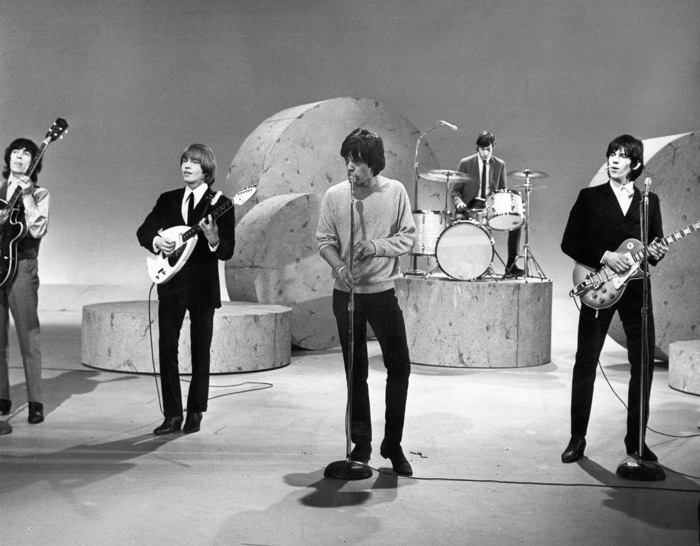After the Rolling Stones’ first appearance on The Ed Sullivan Show, host Ed Sullivan apologized to the viewing audience for the band’s lewd behavior.
The branching out of rock and roll continued in several other directions throughout the 1960s. Surf musicCarefree, hedonistic music that developed around the California surf culture in the 1960s and is characterized by twanging, distorted electric guitar sounds., embodied by artists such as the Beach Boys, Jan and Dean, and Dick Dale, celebrated the aspects of youth culture in California. With their twanging electric guitars and glossy harmonies, the surf groups sang of girls, beaches, and convertible cars cruising along the West Coast. In Detroit, some black performers were developing a sound that would have crossover appeal with both black and white audiences. Combining R&B, pop, gospel, and blues into a genre known as soulA blend of R&B, pop, gospel, and blues music., vocalists such as James Brown, Aretha Franklin, Otis Redding, and Wilson Pickett sang about the lives of black Americans. Producer and songwriter Berry Gordy Jr. developed soul music through the creation of his MotownSuccessful record label founded by Berry Gordy Jr. in Detroit; the Motown sound is characterized by smooth, soulful R&B tunes. label, which would become one of the most successful businesses owned by a black individual in American history.“Berry Gordy Jr. Biography,” Encyclopedia of World Biography, http://www.notablebiographies.com/Gi-He/Gordy-Jr-Berry.html. Capitalizing on the 1960s girl-group craze, Gordy produced hits by the Marvelettes, Martha and the Vandellas, and, most successfully, Diana Ross and the Supremes. For his bands, he created a slick, polished image designed to appeal to the American mainstream.
In the late 1960s, supporters of the civil rights movement—along with feminists, environmentalists, and Vietnam War protesters—were gravitating toward folkUnpolished genre of music based on oral traditions and often associated with the social protest movement of the 1960s. music, which would become the sound of social activism. Broadly referring to music that is passed down orally through the generations, folk music retained an unpolished, amateur quality that inspired participation and social awareness. Carrying on the legacy of the 1930s labor activist Woody Guthrie, singer-songwriters such as Joan Baez; Peter, Paul, and Mary; and Bob Dylan sang social protest songs about civil rights, discrimination against black Americans, and the Cuban Missile Crisis. Having earned himself a reputation as a political spokesperson, Dylan was lambasted by traditional folk fans for playing an electric guitar at the 1965 Newport Folk Festival. However, his attempt to reach a broader crowd inspired the folk rockFolk music played with electric instruments. genre, pioneered by the Los Angeles band the Byrds“Bob Dylan,” PBS.org: American Roots Music: The Songs & the Artists, http://www.pbs.org/americanrootsmusic/pbs_arm_saa_bobdylan.html.. Even though many fans questioned his decision to go electric, Dylan’s poetic and politically charged lyrics were still influential, inspiring groups like the Beatles and the Animals. Protest music in the 1960s was closely aligned with the hippie culture, in which some viewed taking drugs as a form of personal expression and free speech. Artists such as Jimi Hendrix, Jefferson Airplane, the Grateful Dead, and the Doors believed that the listening experience could be enhanced using mind-altering drugs.Dwight Rounds, The Year the Music Died: 1964–1972: A Commentary on the Best Era of Pop Music, and an Irreverent Look at the Musicians and Social Movements of the Time (Austin: Bridgeway Books, 2007), 292. This spirit of freedom and protest culminated in the infamous Woodstock festival in the summer of 1969, although the subsequent deaths of many of its stars from drug overdoses cast a shadow over the psychedelic culture.
After the Vietnam War ended, college students began to settle down and focus on careers and families. For some selfish views took the place of concern with social issues and political activism, causing writer Tom Wolfe to label the 1970s the “me” decade.Tom Wolfe, “The ‘Me’ Decade and the Third Great Awakening,” New York Magazine, August 23, 1976, http://nymag.com/news/features/45938/. Musically, this ideological shift resulted in the creation of glam rockExtravagant, self-indulgent form of rock that incorporated flamboyant costumes, heavy makeup, and elements of hard rock and pop., an extravagant, self-indulgent form of rock that incorporated flamboyant costumes, heavy makeup, and elements of hard rock and pop. A primarily British phenomenon, glam rock was popularized by acts such as Slade, David Bowie, the Sweet, Elton John, and Gary Glitter. It proved to be a precursor for the punk movement in the late 1970s. Equally flamboyant, but rising out of a more electronic sound, discoCommercialized dance music that became popular in the 1970s and is associated with extravagant glittery costumes. also emerged in the 1970s. Popular disco artists included KC and the Sunshine Band, Gloria Gaynor, the Bee Gees, and Donna Summer, who helped to pioneer its electronic sound. Boosted by the success of 1977 film Saturday Night Fever, disco’s popularity spread across the country. Records were created especially for discos, and record companies churned out tunes that became huge hits on the dance floor.
Reacting against the commercialism of disco and corporate rock, punkMinimalist, angry form of rock that includes simple chord structures and often includes politically motivated lyrics. artists created a minimalist, angry form of rock that returned to rock and roll basics: simple chord structures, catchy tunes, and politically motivated lyrics. Like the skiffle bands of the 1950s, the appeal of punk rock was that anyone with basic musical skills could participate. The punk rock movement emerged out of CBGB, a small bar in New York City that featured bands such as Television, Blondie, and the Ramones. Never a huge commercial success in the United States, punk rock exploded in the United Kingdom, where high unemployment rates and class divisions had created angry, disenfranchised youths.“Making ends meet in the 70s,” BBC News Magazine, June 7, 2007, http://news.bbc.co.uk/2/hi/uk_news/magazine/6729847.stm. The Sex Pistols, fronted by Johnny Rotten, developed an aggressive, pumping sound that appealed to a rebellious generation of listeners, although the band was disparaged by many critics at the time. In 1976, British music paper Melody Maker complained that “the Sex Pistols do as much for music as World War II did for the cause of peace.”Marcus Gray, The Clash: Return of the Last Gang in Town (London: Helter Skelter, 2001), 147. Punk bands began to abandon their sound in the late 1970s, when the punk style became assimilated into the rock mainstream.
Figure 6.8
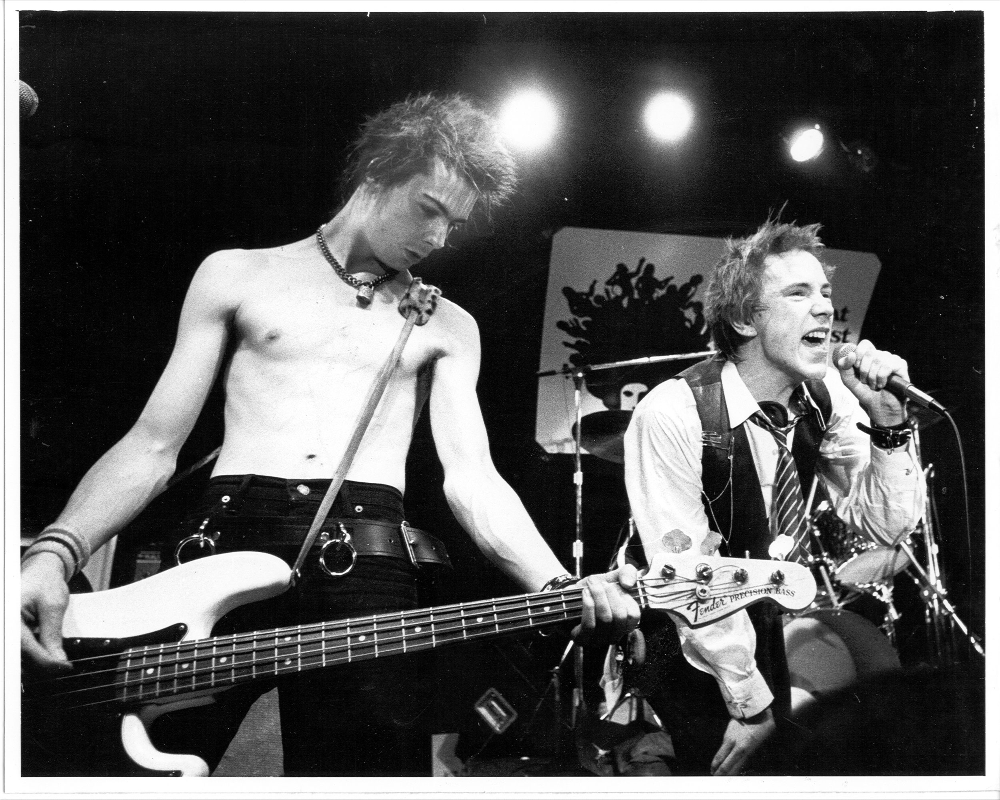Even though the Sex Pistols were severely criticized in the 1970s, their music went on to inspire countless acts and helped develop the underground music scene in England and the United States.
Whereas many British youths expressed their displeasure through punk music, many disenfranchised black American youths in the 1980s turned to hip-hopUrban culture that incorporates activities such as break dancing and graffiti art with the musical techniques of rapping, sampling, and scratching records.—a term for the urban culture that includes break dancing, graffiti art, and the musical techniques of rapping, sampling, and scratching records. Reacting against the extravagance of disco, many poor urban rappers developed their new street culture by adopting a casual image consisting of T-shirts and sportswear, developing a language that reflected the everyday concerns of the people in low-income, urban areas, and by embracing the low-budget visual art form of graffiti. They described their new culture as hip-hop, after a common phrase chanted at dance parties in New York’s Bronx borough.
The hip-hop genre first became popular among black youths in the late 1970s, when record spinners in the Bronx and Harlem started to play short fragments of songs rather than the entire track (known as sampling).Joanna Demers, “Sampling the 1970s in Hip-Hop,” Popular Music 21 (2003): 41–56. Early hip-hop artists sampled all types of music, like funk, soul, and jazz, later adding special effects to the samples and experimenting with techniques such as rotating or scratching records back and forth to create a rhythmic pattern. For example, Kool Moe Dee’s track “How Ya Like Me Now” includes samples from James Brown’s classic funk song “Papa’s Got a Brand New Bag.” The DJs would often add short raps to their music to let audiences know who was playing the records, a trend that grew more elaborate over time to include entire spoken verses. Artists such as Grandmaster Flash and the Furious Five added political and social commentary on the realities of life in low-income, high-crime areas—a trend that would continue with later rappers such as Public Enemy and Ice-T.
Figure 6.9
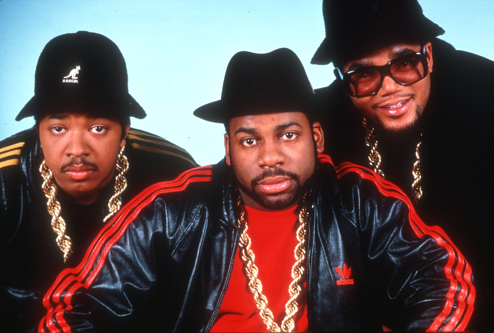Early hip-hop artists, like Run-D.M.C., opposed the clean-cut, polished world of soul and pop by embracing political lyrics that were inspired by everyday life.
In the early 1980s, a second wave of rap artists brought inner-city rap to American youths by mixing it with hard guitar rock. Pioneered by groups such as Run-D.M.C. and the Beastie Boys, the new music appealed to black and white audiences alike. Another subgenre that emerged was gangsta rapControversial form of hip-hop that highlights gang violence., a controversial brand of hip-hop epitomized by West Coast rappers such as Ice Cube and Tupac Shakur. Highlighting violence and gang warfare, gangsta rappers faced accusations that they created violence in inner cities—an argument that gained momentum with the East Coast–West Coast rivalry of the 1990s.
Hip-hop and gangsta rap maintained their popularity in the early 1990s with artists such as Tupac Shakur, the Notorious B.I.G., Dr. Dre, Eazy-E, Ice Cube, and Snoop Dogg at the top of the charts. West Coast rappers such as Tupac Shakur and Snoop Dogg favored gangsta rap, while East Coast rappers, like the Notorious B.I.G. and Sean Combs, stuck to a traditional hip-hop style. The rivalry culminated with the murders of Shakur in 1996 and B.I.G. in 1997.
Figure 6.10
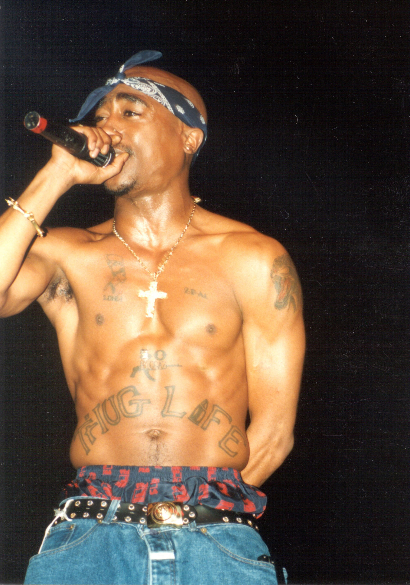The shooting deaths of gangsta rappers Tupac Shakur and the Notorious B.I.G. caused a shift in the hip-hop industry toward less violent music.
Along with hip-hop and gangsta rap, alternative rock came to the forefront in the 1990s with grunge. The grungeSubgenre of alternative rock named for its characteristic sludgy, distorted guitar sound. scene emerged in the mid-1980s in the Seattle area of Washington State. Inspired by hardcore punk and heavy metal, this subgenre of rock was so-called because of its messy, sludgy, distorted guitar sound, the disheveled appearance of its pioneers, and the disaffected nature of the artists. Initially achieving limited success with Seattle band Soundgarden, Seattle independent label Sub Pop became more prominent when it signed another local band, Nirvana. Fronted by vocalist and guitarist Kurt Cobain, Nirvana came to be identified with Generation X—the post–baby boom generation, many of whom came from broken families and experienced violence both on television and in real life. Nirvana’s angst-filled lyrics spoke to many members of Generation X, launching the band into the mainstream. Ironically, Cobain was uncomfortable and miserable, and he would eventually commit suicide in 1994. Nirvana’s success paved the way for other alternative rock bands, including Green Day, Pearl Jam, and Nine Inch Nails. More recently, alternative rock has fragmented into even more specific subgenres.
Figure 6.11
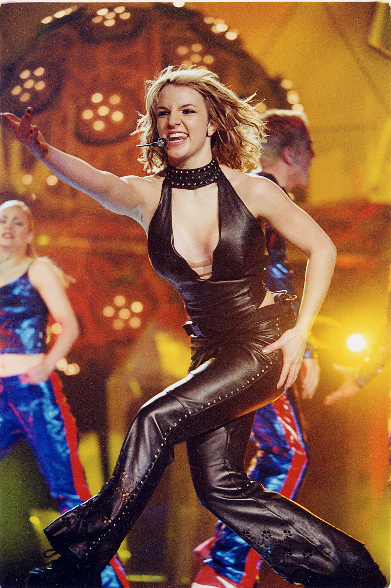Britney Spears was one of the driving forces behind the teen-pop phenomena of the late 1990s, paving the way for pop stars Christina Aguilera and Pink.
By the end of the 1990s, mainstream tastes leaned toward pop music. A plethora of boy bands, girl bands, and pop starlets emerged, sometimes evolving from gospel choir groups, but more often than not created by talent scouts. The groups were aggressively marketed to teen audiences. Popular bands included the Backstreet Boys, ’N Sync, and the Spice Girls. Meanwhile, individual pop acts from the MTV generation such as Madonna, Michael Jackson, and Prince continued to generate hits.
The 2000s began right where the 1990s left off, with young singers such as Christina Aguilera and Destiny’s Child ruling the pop charts. Pop music stayed strong throughout the decade with Gwen Stefani, Mariah Carey, Beyoncé, Katy Perry, and Lady Gaga achieving mainstream success. By the end of the decade, country artists, like Carrie Underwood and Taylor Swift, transitioned from country stars to bona fide pop stars. While rock music started the decade strong, by the end of the 2000s, rock’s presence in mainstream music had waned, with a few exceptions such as Nickelback, Linkin Park, and Green Day.
Figure 6.12
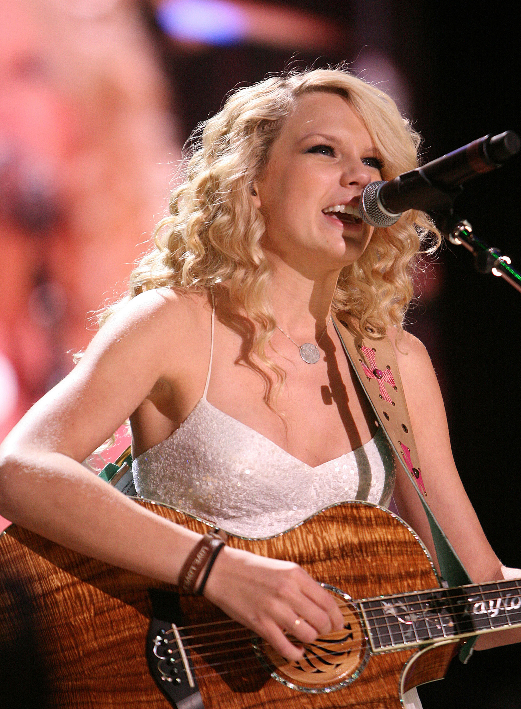Taylor Swift’s 2008 album Fearless went multiplatinum, and hits like “You Belong to Me” and “Love Story” helped her go from country star to mainstream pop star.
Unlike rock music, hip-hop maintained its popularity, with more commercial, polished artists such as Kanye West, Jay-Z, Lupe Fiasco, and OutKast achieving enormous success. While some gangsta rappers from the 1990s—like Dr. Dre and Snoop Dogg—softened their images, other rappers—such as 50 Cent and Eminem—continued to project a tough image and to use violent lyrics. An alternative style of hip-hop emerged in the 2000s that infused positive messages and an element of social conscience to the music that was missing from early hip-hop tracks. Artists such as Common, Mos Def, and the Black Eyed Peas found success even though they didn’t represent traditional stereotypes of hip-hop.
Choose a decade between 1900 and 2010. Research a technological development that took place during this time that influenced pop music—for example, the development of the electric guitar and its influence on rock and roll. Consider how this development influenced trends within the industry.


{kind=link}